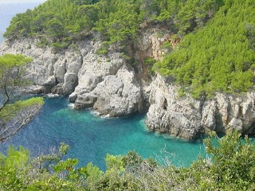
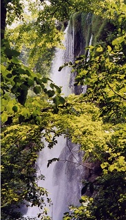
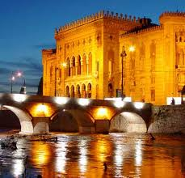
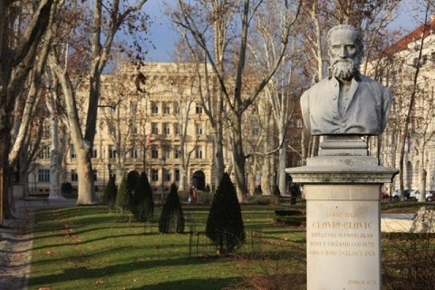

La Croatie est réellement une destination "tendance". L'attraction qu'elle exerce sur
les touristes du monde entier s'explique d'abord par son climat exceptionnel et son
magnifique littoral. Mais, en dehors du cliché de carte postale, la Croatie est un
pays
fascinant, à bien des égards.
Paysages

Il faut bien avouer que la Croatie, c'est d'abord d'incroyables paysages. Même si la
côte
dalmate et ses îles laissent un souvenir impérissable, les paysages croates ne se réduisent pas
à
cela.
On trouve également de superbes montagnes, de majestueuses forêts et
de
vertes campagnes. Bien consciente de cet atout majeur, la Croatie a créé huit
parcs
nationaux. Celui qui englobe les lacs de Plitvice, près de Zadar, est
certainement le plus étonnant et le plus beau.

Identité croate
Les Croates possèdent une identité propre. Ils se différencient de leurs voisins des Balkans par
leur
conception de la vie, résolument occidentale. Leur culture, teintée d'exubérance méditerranéenne
et
de
chaleur d'Europe centrale, est réellement passionnante. Voyager en Croatie, c'est partir à la
découverte
d'un peuple accueillant et festif.
Patrimoine architectural

Les invasions successives qu'a connues la Croatie ont permis la création d'un patrimoine
architectural
exceptionnel. Romains, Vénitiens et Autrichiens lui léguèrent de superbes monuments. Des
cités
comme Pula, ou Dubrovnik vous séduiront par leurs richesses du passé. Les musées
croates
veillent à conserver ces précieux vestiges archéologiques.
Tradition artistique
A ces merveilles historiques s'ajoute une tradition artistique profondément ancrée dans le cœur des
Croates.
A la Renaissance, le pays compta l'une des plus grandes écoles d'art sacré. Plus tard,
la
Croatie vit naître Ivan Mestrovic (1883-1962), célèbre sculpteur du XXe siècle.
Evènements culturels

Aujourd'hui, la vie du pays, et plus particulièrement de Zagreb, est rythmée par des évènements
culturels au rayonnement international. Les hommages rendus au cinéma d'animation, au
jazz ou au folklore sont quelques illustrations du formidable
essor artistique de la Croatie.
Résumons un peu :
Un peuple fascinant, une nature préservée, un patrimoine historique exceptionnel et une effervescence
artistique. Alors, c'est pour quand le départ ?